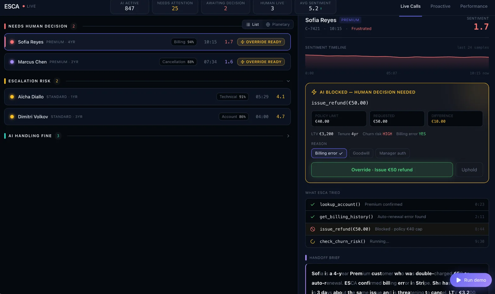
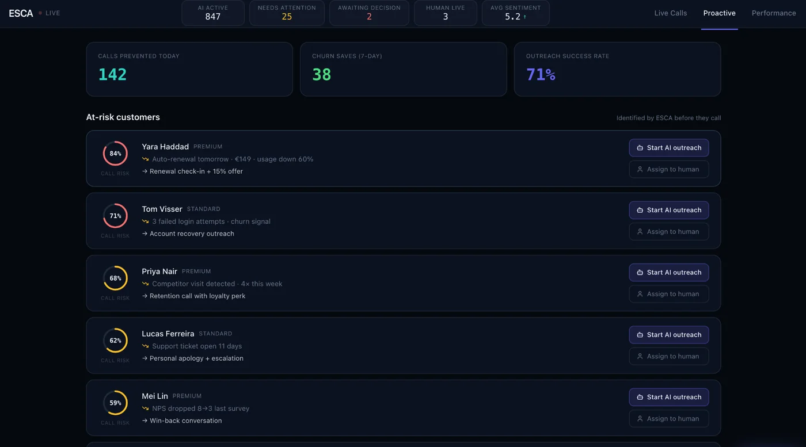
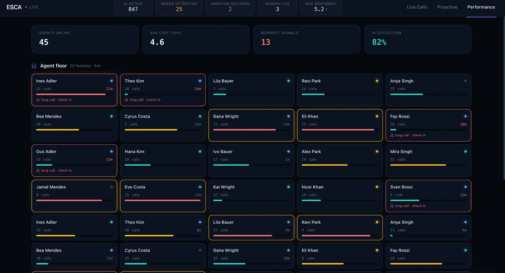

A team of eight, in three countries
At Atheneum I grew the BI team from one person to eight across Berlin, London and APAC, and was responsible for hiring, standards and mentoring.
Business intelligence and AI automation, Berlin
I make business data useful, and I build the AI automations that run on top of it.
Usually it lives in six places that disagree with each other: the CRM, the accounting tool, a dozen spreadsheets and somebody's inbox. Nobody trusts the numbers, so every decision starts with an argument about them.
One place for the numbers and one agreed meaning for each of them. At HYGH I led the build of the data platform from scratch, so that management, investors and the board all read the same figures.
Assistants that answer questions straight from the database. Chatbots that look facts up instead of guessing. Workflows that take over the routine steps, and hand over to a person when a decision needs one.
What I care about
A demo takes a weekend. I care about what is still running a year later: what it costs each month, who looks after it, and what happens on the day it gets something wrong.
Where I come from
Economics in Delhi, then a Master in Management at WHU. I started as an analyst working next to sales and operations, and I still ask what a project is worth before I ask how to build it.
What I taught myself
Data warehouses, SQL and dashboards first. Then automation, from Zapier to n8n. For the last few years, language models, function calling and voice agents on top.
I work in the middle and translate in both directions.
From analyst to Head of Business Intelligence, in nine years.
At Medigo, Smunch, Atheneum and HYGH, all in Berlin.
At Atheneum I grew the BI team from one person to eight across Berlin, London and APAC, and was responsible for hiring, standards and mentoring.
Automating recurring reports cut the time several departments spent on them by more than 70%.
At HYGH I led the rollout of AI text-to-SQL on n8n, so non-technical teams can question their Salesforce data without waiting for an analyst.
At Atheneum I led the design and rollout of a pay model tied to net revenue, which lifted gross revenue by roughly half.
Five things I've built or led. The Projects tab explains each one without jargon.
In daily use at HYGH
One place for every number the company runs on, built from scratch.
In use at HYGH
Colleagues ask in plain English and get the answer from the data, without waiting for an analyst.
In use at HYGH
An email goes to the right person the moment a number looks wrong.

Prototype with demo data
A screen for people who supervise AI phone agents and step in when a decision needs a human.
Working prototype
It fetches facts from the real system and hands sensitive questions to a person.
Including a voice agent, two hackathon builds and an accounting data case study.
2011 to 2014
Bachelor of Arts in Economics, Hansraj College
2014 to 2015
Consultant, Gurugram
Team engagement projects across South East Asian and European markets, and return-on-investment presentations for global clients.
2015 to 2017
Master in Management, Otto Beisheim School of Management
With an exchange semester at the University of South Carolina. This is where the business thinking comes from.
2017 to 2018
Business Intelligence Analyst, Berlin
Ran the CRM, built dashboards for the operational and financial figures, and developed a model to forecast demand.
2018 to 2019
CRM Manager, Berlin
Moved the company to a new CRM, cleaned the data, automated the sales process and trained the sales team on it.
2019 to 2022
BI Controller, then BI Team Lead, Berlin
Built a team of eight across three locations. Led the reporting project that opened up data to the whole company, and the pay model that lifted gross revenue by around 50%.
2022 to today
Head of Business Intelligence, Berlin
Sparring partner to the CEO and CFO. Led the build of the data platform, the board and investor reporting, and the introduction of AI. One small example: a quoting tool that saves the sales team about 30 minutes per offer.
His ability to understand business requirements easily and translate them into technical solutions makes him a great asset.
Excellent mentor, with extensive knowledge regarding data management tools.
I'm based in Berlin and work in English, with German at B1 level.
Each one explained without jargon: what it is, why anyone needed it, how it works, and where it stands today.
Built or led at HYGH, with real users and real data.
How the layers sit on top of each other
In daily use at HYGH
A data platform that collects the figures from every system, calculates each one in a single agreed way, and feeds the reports that management, investors and the board read.
Before it existed, reports were put together by hand, and the same number could come out differently depending on who built the spreadsheet. Automating that work cut manual reporting time by more than 70% across several departments.
In daily use. I led the build from scratch and chose the tools. Engineering and product teams delivered it with me.
Built with BigQuery, dbt, Fivetran, Tableau and Salesforce
Which cities booked the most screens last month?
SELECT city, COUNT(*) AS bookings
FROM bookings
WHERE booked_month = '2026-10'
GROUP BY city
ORDER BY bookings DESC
LIMIT 3;Illustration with made-up data
In use at HYGH
Colleagues type a question the way they would ask a person, and get the answer from the company's data without waiting for an analyst.
In most companies every request for a number lands in the data team's queue. A sales manager who wants last month's bookings by city waits a day for something that takes a second to compute. This assistant takes the everyday questions out of that queue.
This is the project I would call production: non-technical teams use it on real Salesforce data. Its limits are real too. It handles clear questions on well-described tables, and anything ambiguous still goes to an analyst.
Built with n8n, a language model and BigQuery
The nightly load finished with 0 rows. It usually brings in around 1,400.
Example alert with made-up numbers
In use at HYGH
Automatic checks watch the important figures and email the responsible person as soon as something looks wrong.
A dashboard that shows one wrong number loses people's trust for months. Usually nobody notices the problem until a manager asks why revenue dropped to zero on Tuesday.
Simple by design and in daily use. It is the least glamorous thing on this page and probably the most valuable.
Working builds that have not served real customers yet. I say so on each one.


Real screens from the prototype. The figures on them are demo data.
Prototype with demo data
A screen that lets a small team of humans oversee many AI agents at once and step in only when a decision needs a person.
AI agents can handle routine calls, but they keep reaching moments they aren't allowed to decide alone, such as a refund above the permitted limit. Today those moments get lost in dashboards, and the customer waits.
A prototype with invented demo data, so the figures on the screens are not real results. What carries over is the design: the AI never decides money or medical questions alone, and the human gets everything needed to decide in seconds.
Built around function calling and live sentiment scoring
Where is my prescription order 48213?
Looks up order 48213 in the pharmacy system
Your order has been ready for pickup at the Berlin-Mitte branch since 10:42.
Can I take ibuprofen with my blood thinner?
Medical question: handed to a pharmacist
That's a question for one of our pharmacists. I've passed it on and someone will call you back shortly.
Illustration of the pattern with a made-up order
Working prototype
A chat assistant that fetches facts such as an order status from the real system, and hands sensitive questions to a human.
Chatbots get into trouble when they answer from memory, because they fill gaps with plausible inventions. The fix is a technique called function calling: the model is given a short list of actions it may request, like "look up this order", and the answer comes from your system.
A prototype I built to learn the pattern properly. It has not served real customers. Before it did, I would test it against a few hundred real questions and log every lookup it makes.
Built with a language model, function calling and n8n
Good morning, I'm calling about your open insurance case.
Yes, do you have the case number?
Fetches the case from the record
One moment, let me find it. Here it is.
Illustration of a demo call
Working prototype
A voice agent that holds a short phone conversation, looks up the caller's record while talking, and passes them to a person when needed.
A lot of phone work is routine: confirming an appointment, checking a status, collecting a missing detail. Staff spend hours on calls that follow the same script every time.
This is a demo call centre, not a live one. Open points before real use: the short delay before the AI replies, consent for recording, and what callers think of talking to a machine.
Built with voice AI, function calling and webhooks
Hackathon builds, a case study and smaller things.
Hackathon, Big Berlin Hack, Qontext track
AI assistants give poor answers when a company's knowledge is scattered across emails, CRM entries and documents that contradict each other. This system gathers those sources into one memory an AI can read, records where every single fact came from, and settles conflicts between sources.
Hackathon, Big Berlin Hack, Buena track
A dashboard for property managers. It merges the accounting system, Gmail, Slack and scanned PDFs into one live summary per building, so a person or an AI can see the current state of a property at a glance.
Code on GitHubCase study on anonymised data
I took a raw export from DATEV, the accounting software most German companies use, and worked out how to reshape it so a manager can ask it questions. The file held almost 27,000 bookings from one year, with account numbers instead of names and dates in German formats. After cleaning and labelling, most finance questions become a simple filter. This was a three-hour hiring task in 2021, not a client project.
Team project at HYGH, I contributed
An internal tool built by the team. I was involved but did not lead it. I list it because I know how it is put together, and because I would rather be exact about my share than claim the whole thing.
Live
An assistant that answers questions about my career, using only my CV and showing which line each answer came from. A small working example of an AI that sticks to given facts.
A demo takes a weekend. Something a business can rely on every day needs three more answers: what it costs, what happens when it's wrong, and where the data goes.
First
AI services charge by the amount of text they read and write. That makes the monthly bill easy to estimate before anything is built.
The other option is to buy a machine and run the AI in your own building. That costs more up front, but every word stays inside your walls. Change the numbers to match your situation.
A token is roughly three quarters of a word. The prices are examples. In a real quote I use the current price list of the chosen model.
Second
Language models sometimes state things that aren't true, and they do it confidently. In a pharmacy that is not acceptable.
You can't remove the risk completely. You can design the system so that a wrong answer is unlikely, gets noticed, and never reaches a patient on a medical question.
If it still happens, the fix follows a fixed routine. I look up the logged conversation and find out whether the model had the wrong information or ignored the right one. That exact case goes into the test set. Then I correct it, run every test again, and only then switch it back on.
Third
Health data is the most protected category under GDPR. For a pharmacy group I would start from the strictest setup and relax it only where there is a clear reason.
On medical questions the AI only prepares. A pharmacist decides.
I have run data systems and internal automations in daily use for years, with real users and real consequences when they break.
I have not yet run a customer-facing AI assistant at large scale. My chatbot and voice projects are working prototypes. What I bring to them is the operating discipline from the data side: cost estimates, tests, monitoring and a plan for failure. I'd rather tell you that now than have you find out later.
Script, voice, pictures and motion, produced end to end. I also write about what I build.
The same tools that automate back-office work can produce explainer videos, product visuals and social posts at a fraction of the usual cost.
I run my own Instagram channel about AI as a testing ground, so I know what these tools can do today and where they still look cheap.
Sixteen published articles on Medium about language models, MCP, running models locally, dbt and BigQuery.
Natural-sounding voices for narration, and voice agents that can hold a phone conversation.
3D scenes and renders, combined with AI video tools.
Animated, interactive websites. Everything that moves on this site is Three.js and plain code.
Generating and editing visuals in one consistent style across a whole series.
A pipeline that writes a debate script, voices it, illustrates it and assembles the episode.
The glue: workflows that render, store and queue content for publishing.
There are no stock photos and no AI-generated pictures here. The 3D scenes are drawn live in your browser from a few hundred thousand points, and the only photograph is the one of me.
Fonts and scripts are served by this site itself. Nothing is loaded from Google or any other third party, and there are no trackers.
An assistant that answers only from my CV and shows which line each answer came from. Ask it what you would ask me in a first call.